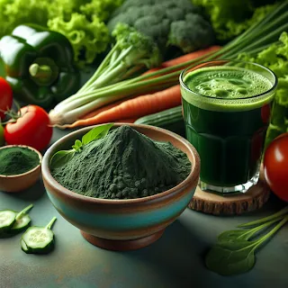

Alimentation & nutrition · 2 min de lecture
Spiruline un super-aliment
Les Bienfaits de la Spiruline : Composition et Utilisation

La
spiruline, cette algue bleu-vert microscopique, est une véritable bombe
nutritionnelle. Utilisée depuis des siècles par diverses civilisations,
elle est aujourd'hui reconnue pour ses nombreux bienfaits pour la
santé.
Les Bienfaits de la Spiruline
- Riche en Nutriments :
La spiruline est extrêmement riche en protéines (environ 60-70% de son poids sec). Elle contient également une variété impressionnante de vitamines et minéraux, y compris les vitamines B1, B2, B3, le cuivre, le fer, le magnésium, le potassium, et le manganèse. - Antioxydants Puissants :
La phycocyanine, le principal composé actif de la spiruline, possède de puissantes propriétés antioxydantes et anti-inflammatoires. Elle aide à combattre le stress oxydatif et à réduire l'inflammation dans le corps. - Soutien au Système Immunitaire :
Grâce à sa richesse en antioxydants et en nutriments, la spiruline peut renforcer le système immunitaire, aidant ainsi votre corps à combattre les infections et les maladies. - Amélioration de la Force et de l'Endurance :
Des études ont montré que la spiruline peut améliorer la force musculaire et l'endurance, ce qui en fait un complément idéal pour les athlètes et ceux qui cherchent à améliorer leur condition physique. - Détoxification :
La spiruline aide à éliminer les toxines lourdes, telles que les métaux lourds, du corps, grâce à ses propriétés détoxifiantes naturelles.
Composition de la Spiruline
La spiruline est composée de plusieurs éléments nutritifs essentiels :
- Protéines de Haute Qualité : Comme mentionné, elle contient environ 60-70% de protéines.
- Vitamines : Inclut les vitamines B1, B2, B3, B12, et la vitamine E.
- Minéraux : Richesse en fer, magnésium, potassium, cuivre, manganèse, et zinc.
- Acides Gras Essentiels : Notamment les oméga-3 et oméga-6.
- Phycocyanine : Un pigment avec des propriétés antioxydantes et anti-inflammatoires.
Utilisation de la Spiruline
La spiruline peut être consommée de diverses manières :
- En Poudre : Ajoutée à des smoothies, des jus, ou simplement mélangée avec de l'eau. Parfaite pour les recettes culinaires, que ce soit dans les sauces, les soupes ou les salades.
- En Comprimés/Capsules : Une option pratique pour ceux qui préfèrent éviter le goût puissant de la spiruline.
- Incorporée aux Aliments : Utilisée dans des gâteaux, des biscuits, ou des barres énergétiques pour un apport nutritionnel supplémentaire.
Merci pour votre soutien!
« Travail assis : pauses actives »
👉 Créez votre planning de pauses gratuit : chest0.fr/outils/pauses-actives/
« Journal du sommeil »
👉 Tenez votre journal du sommeil sur 7 jours, gratuitement : chest0.fr/outils/journal-sommeil/
« Les 20 aliments des centenaires » et « Microbiote intestinal »
👉 Mes livres de recettes naturelles, élixirs et détox : chest0.fr/pages/livres.html
« 4 habitudes à observer au quotidien »
👉 Faites le point sur vos habitudes avec l'outil gratuit : chest0.fr/outils/equilibre-quotidien/
Guides, outils gratuits et livres pour prendre soin de toi au quotidien.
Découvrir les produits Chest0